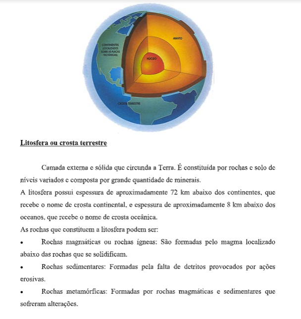
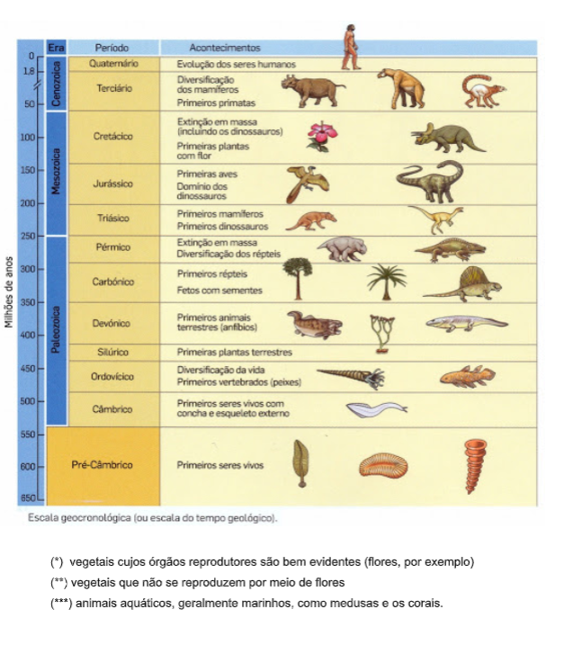
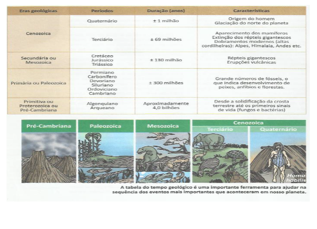
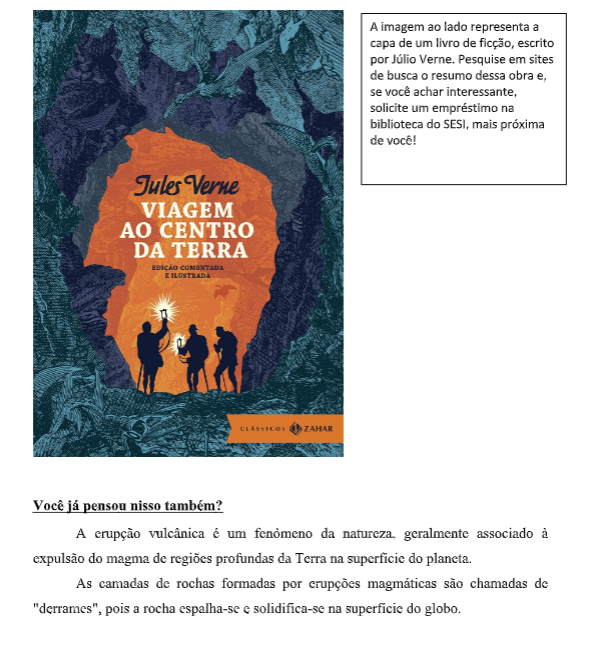
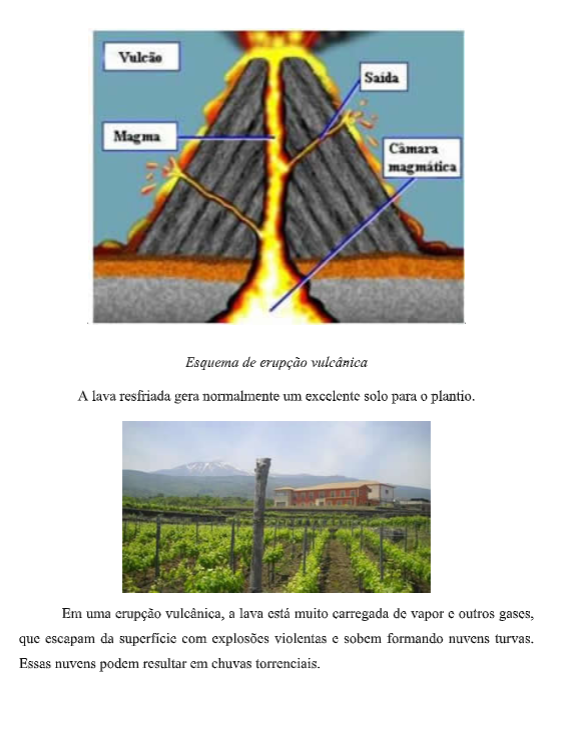
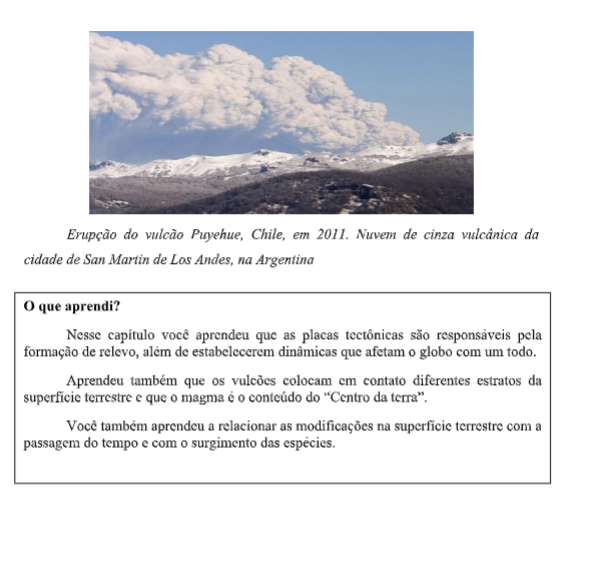
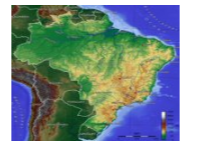
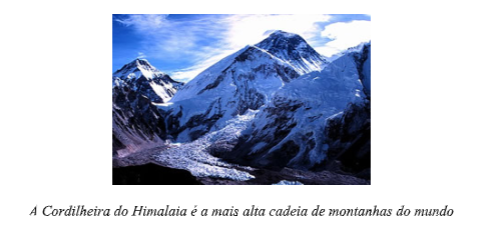
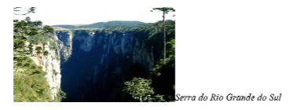

Capítulo 4: Pecuária
Questão:Pecuária é uma atividade criatória, isto é, de criação de animais. Compreende a criação de gado (ovino, caprino, bovino, suíno, asinino etc.), aves, coelhos e abelhas. Da mesma forma que a agricultura, é uma importante fonte de gêneros alimentícios e matérias-primas industriais. Estude o capítulo tentando resolver à questão: Como a pecuária é desenvolvida atualmente e como poderia ser melhor aproveitada?
Pecuária é uma atividade criatória, isto é, de criação de animais. Compreende a criação de gado (ovino, caprino, bovino, suíno, asinino etc.), aves, coelhos e abelhas. Da mesma forma que a agricultura, é uma importante fonte de gêneros alimentícios e matérias-primas industriais. Estude o capítulo tentando resolver à questão: Como a pecuária é desenvolvida atualmente e como poderia ser melhor aproveitada? Alguns animais apresentam apenas importância regional: • rena, foca e boi almiscarado, na região Polar Ártica; • lhama e vicunha, nos países andinos (América do Sul); • iaque, no Tibete (Ásia); • camelo e dromedário, na África e Oriente Médio, entre outras. Questão: Pecuária é uma atividade criatória, isto é, de criação de animais. Compreende a criação de gado (ovino, caprino, bovino, suíno, asinino etc.), aves, coelhos e abelhas. Da mesma forma que a agricultura, é uma importante fonte de gêneros alimentícios e matérias-primas industriais. Estude o capítulo tentando resolver à questão: Como a pecuária é desenvolvida atualmente e como poderia ser melhor aproveitada? Os animais podem ser criados para a produção de carne (pecuária de corte), para a produção de leite (pecuária leiteira), ovos e lã ou, ainda, para servirem como meio de transporte.
O sistema de criação pode ser extensivo ou intensivo:
• No sistema extensivo o gado é criado solto, aproveitando-se das pastagens naturais. • No sistema intensivo o gado é criado em pequenas áreas; é estabulado, e sua alimentação é feita à base de ração.
  Leitura complementar
Plantando o Futuro - A ciência semeia a lavoura do Século XXIVegetais criados por Engenharia Genética, satélites que dizem a hora de matar as pragas, robôs que aram e fertilizam o solo - e até culturas sem solo algum. No limiar dos tempos, o homem obtinha os alimentos simplesmente aproveitando os recursos que a natureza lhe fornecia. A contar de 10 mil anos atrás, quando começou a substituir a coleta peIo cultivo, aprendeu a selecionar as plantas mais produtivas. Mas as poucas alterações possíveis eram quase sempre lentas e casuais. Depois durante milhares de anos, foi descobrindo as técnicas dos cruzamentos para aumentar o rendimento das plantações, hoje por meio da Biotecnologia, tornou-se possível semear em laboratório as plantas mais convenientes para a alimentação. Em princípio, já é possível abrir as células de um simples vegetal de um deserto, e roubar-lhe as instruções químicas, os genes, que lhes permitem viver com pouca água. Os genes podem, então, ser embutidos, por exemplo, nas células de milho, ampliando as possibilidades dessa cultura essencial para o homem. Na Universidade de San Diego, nos Estados Unidos, nasceu uma planta de fumo dotada de genes de vaga-lume; Em consequência, brilha no escuro. Em outro tipo de experiência, minúsculos fragmentos de uma planta - a ponta de uma folha, por exemplo - são cuidadosamente tratadas com hormônios vegetais até se transformarem em milhares de plantas completas, todas idênticas entre si. No Brasil, essa técnica já se tornou rotina, permitindo produzir mudas de batata absolutamente iguais e isentas do qualquer doença, prontas para o plantio em larga escala. Algo parecido possibilita cortar e replantar uma vasta área de eucaliptos com árvores melhoradas, mais eficientes ou com menor custo de produção. Mas, além da Biologia, a nova agricultura pode contar com recursos da Eletrônica. A época em que o agricultor planejava seu trabalho simplesmente olhando para o céu já se tornou passado distante. Atualmente, ele se vale de satélites e computadores para analisar o curso do clima, a qualidade do solo e o desenvolvimento das plantas. Robôs colheitadores, adubadores e semeadores já percorrem os campos. Nem todas as inovações experimentais se tornarão realidade, necessariamente, mas essas experiências acenam com a possibilidade de um mundo mais bem alimentado e, portanto, mais saudável. FONTE: Revista SUPERINTERESSANTE ano 4, n° 8, p.58, Agricultura
    